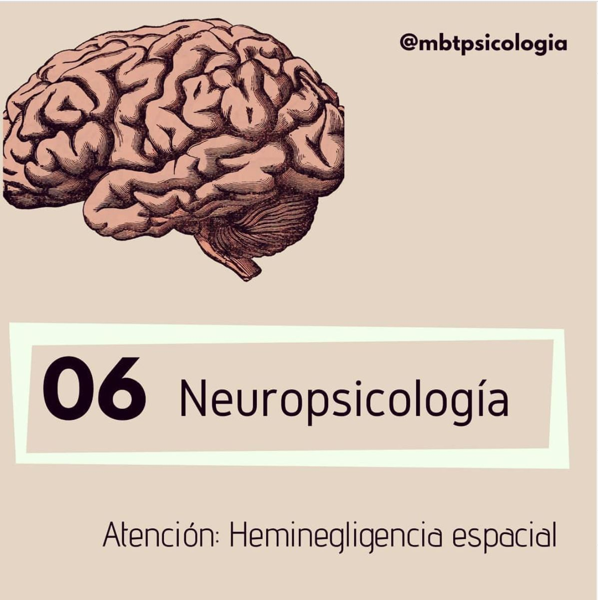

🧠 HEMINEGLIGENCIA ESPACIAL

Para terminar esta serie de publicaciones sobre Neuropsicología, hoy vengo a hablaros de la Heminegligencia.
🔹Se trata de una alteración de la atención que se produce tras un DAÑO CEREBRAL. La persona que la padece no puede orientarse hacia estímulos que le quedan dentro de una de las mitades del espacio. Si la lesión es en el hemisferio derecho, los estímulos u objetos situados a la izquierda (contralaterales), no son atendidos por la persona, es como si no estuvieran allí!
🔸Cuando se tiene heminegligencia espacial por lesión derecha, no se atiende a ningún estímulo situado en la parte izquierda, ni auditivo, ni visual, ni táctil. En estos pacientes es habitual ver que dejan las mitades de sus platos sin comer o que solo realizan medio dibujo.
🔹No hay ningún déficit sensorial que explique la sintomatología. Los ojos, oídos, tacto funcionan a la perfección y, de hecho, la información del lado no atendido sí que llega al cerebro. Hay una alteración del TRAYECTO DE LA INFORMACIÓN hacia las áreas cerebrales que permiten que se integre en la consciencia, de forma que el estímulo no se percibe.
✨De nuevo, en el estupendo libro de Oliver Sacks, "El hombre que confundió a su mujer con un sombrero" , que os recomendé en la anterior publicación, se habla de este trastorno (capítulo "¡Vista a la derecha!" por si le queréis echar un ojillo)
¿Habíais escuchado hablar de esta alteración alguna vez?
Espero que os hayan resultado interesantes este grupito de publicaciones sobre Neuropsicología 💚

OTROS ARTÍCULOS